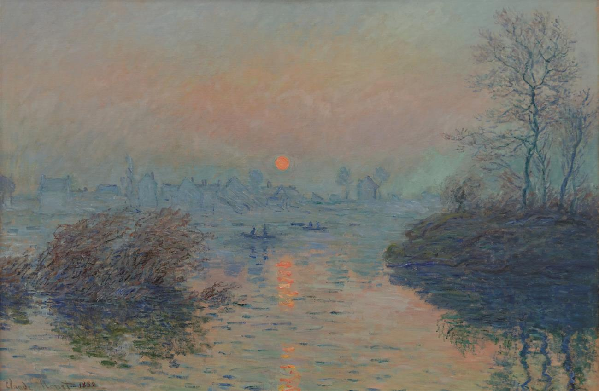

- 图片尺寸：2852 x 3600 像素
- 作品名称：The Artist's Garden at Vétheuil
- 创作年代：1881
- 分类: 花园
- 现位于：巴塞尔艺术博物馆
- 实际尺寸：151.5 x 121 cm
- 版权信息：Public domain
- 图片尺寸：550 x 731 像素
- 作品名称：The Japanese Bridge
- 创作年代：1899
- 分类: 花园
- 现位于：英国国家美术馆（The National Gallery），伦敦
- 实际尺寸：88.3 × 93.1 cm
- 版权信息：Public domain

- 图片尺寸：5773 x 4478 像素
- 作品名称：Impression, sunrise
- 创作年代：1882
- 分类：城市风光
- 现位于：Musée Marmottan Monet, Paris, France
- 实际尺寸：63 x 48 cm
- 版权信息：Public domain
- 图片尺寸：2781 × 2330 像素
- 作品名称：Argenteuil
- 创作年代：1875
- 分类：船
- 现位于：Musée d'Orsay, Paris, France
- 版权信息：Public domain
- 图片尺寸：1000x826px
- 作品名称：Saint-Lazare Station, Exterior
- 创作年代：1876
- 分类：火车站
- 版权信息：Public domain
- 图片尺寸：5577 × 4173 像素/span>
- 作品名称：Water Lilies
- 创作年代：1915
- 分类：睡莲
- 现位于：慕尼黑美术馆（Neue Pinakothek），德国
- 实际尺寸：151.4 x 201 cm
- 版权信息：Public domain

- 图片尺寸：6001 × 7455 像素
- 作品名称：The Promenade, Woman with a Parasol
- 创作年代：1875
- 分类:人物
- 现位于：美国国家艺术馆
- 版权信息：Public domain

- 图片尺寸：6527x4233px
- 作品名称：Haystacks, midday
- 创作年代：1890
- 分类:干草堆
- 现位于：National Gallery of Australia (NGA), Canberra, Australia
- 版权信息：Public domain